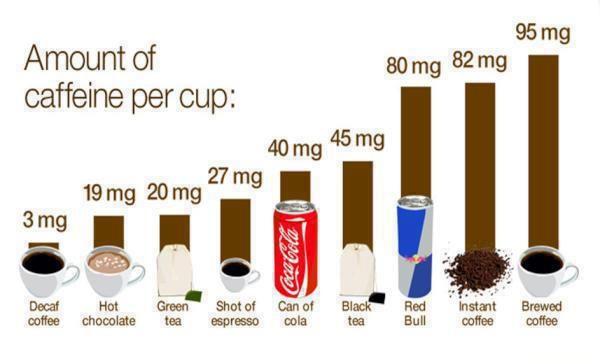
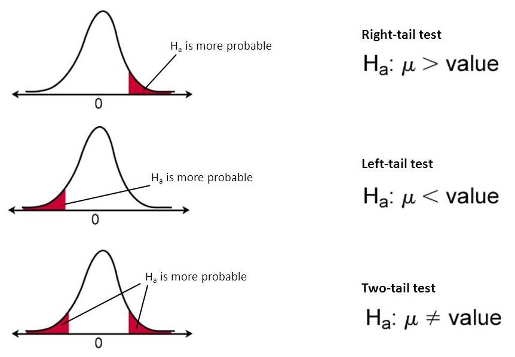

Coffee Contains more Caffeine than an Energy Drink
 Dataset Link Code Link Caffeineinformer database Practical significance claims1. Introduction:
In a world where drink choices play a significant role in our daily lives, the question of caffeine and calorie content has become increasingly relevant. This project embarks on a journey to unravel the mysteries surrounding the nutritional composition of popular drinks, with a particular focus on the age-old debate: coffee vs. energy drinks. Caffeine, a stimulant found in various drinks, has long been associated with diverse health outcomes, while calories serve as a crucial metric in assessing the nutritional impact of our favourite drinks. The research question at the heart of this investigation is taken from COFFEE VS. ENERGY DRINKS: WHICH IS BETTER?, which states that coffee contains more caffeine and fewer calories when compared to energy drinks and to other drinks. The significance of this inquiry lies not only in satisfying our curiosity but in informing everyday decisions regarding drinks consumption and promoting healthier lifestyle choices. To understand the nuances of this comparison, we delve into a rich dataset gathered from a myriad of popular drinks, aiming to provide insights accessible to individuals from all walks of life. This introduction sets the stage by elucidating the widespread implications of our drink choices, introducing the historical context of caffeine consumption, and highlighting the contemporary importance of informed decision-making in nutritional preferences. As we navigate through the subsequent sections, we will unveil our methodology, and present findings that challenge conventional wisdom regarding coffee, energy drinks and their nutritional impact.
2. Dataset
The dataset utilized in this project was gathered through web scraping from the website Caffeine Informer, a comprehensive resource providing information about various drinks and their caffeine and calories content. Web scraping was conducted in Python using Beautiful Soup to extract all the features.
While the dataset aims to provide a broad representation of popular drinks, it is essential to acknowledge potential biases. The information is sourced from a specific website, and the representation may be influenced by the content available on that platform. Bias may arise from the selection of drinks featured on the website, potentially favouring those with higher or lower caffeine content. Additionally, the accuracy of the data relies on the reliability of the source and the precision of the web scraping process.
3. Data Preprocessing:
- Renamed the features for consistency and clarity. Checked for missing values and did not find any which indicates the completeness of the dataset.
- Calculated calories per floz for each record and stored it in new feature named calories_per_floz.
- Dropped the unnecessary columns.
3.2 Exploratory Data Analysis (EDA):
To gain insights into the dataset and lay the foundation for our analyses, we performed exploratory data analysis (EDA). This involved generating summary statistics, visualizing distributions, and identifying patterns in the key variables—volume, calories, caffeine content, and drink type. EDA aided in understanding the data's structure, uncovering potential outliers, and informing subsequent analytical decisions.
3.3 Statistical Analyses:
3.3.1 Two Sample z-tests:
Conducted upper and lower-tailed two-sample z-tests using manual calculations and the BDSA package in R to compare caffeine content and calorie count between two samples (coffee and energy drinks, coffee and other drinks). These tests are appropriate for comparing means between two samples and are relevant to our research questions.
Central Limit theorem (CLT) states that the distribution of sample means resembles the normal distribution if sample size is > 30. Since the size of our samples is greater than 30, the distribution resembles the normal distribution. Hence z test is the ideal test statistic. We also set our significance level (𝜶) to 0.05 (5%). If the p-value from the Two sample z-test ≤ α, then we will reject our null hypothesis else there is no strong evidence to reject the null hypothesis.
p-value: It is the probability, calculated given that the null hypothesis is true, of getting the value of the test statistic as extreme as the value from the sample.
Significance level (𝜶): It is a value such that the null hypothesis is rejected if p-value ≤ α, and cannot be rejected if p-value > α.
Upper tailed test: Extreme values are located in the upper tail of the distribution. p-value = 1 – pnorm(z)
Lower tailed test: Extreme values are located in lower tail of the distribution. p-value = pnorm(z)
Z statistic for two samples - Manual calculation:
3.3.2 Correlation Analysis:
Calculated correlation coefficient to assess the relationship between caffeine content and calorie count. This provided insights into potential associations between these key variables i.e., caffeine and calorie count.
These methods were selected based on their suitability for addressing the research questions and providing meaningful insights into the comparative nutritional aspects of coffee, energy drinks, and other drinks. The combination of exploratory data analysis and statistical tests offers a comprehensive approach to understanding the dataset and drawing reliable conclusions.
Correlation coefficient = 0.08885294. Since the correlation coefficient is close to 0, there is no statistically significant relationship between caffeine content and calorie count.
4. Results
Statistical Analyses:
4.1 Test 1 - Upper tailed Two Sample z-test:
Null Hypothesis (H0): There is no significant difference in caffeine content between coffee and an Energy Drink.
Alternative Hypothesis (H1): Coffee contains more caffeine than an Energy Drink.
4.2 Test 2 - Lower tailed Two Sample z-test:
Null Hypothesis (H0): There is no significant difference in calorie count between coffee and an Energy Drink.
Alternative Hypothesis (H1): Coffee contains fewer calories than an Energy Drink.
4.3 Test 3 - Upper tailed Two Sample z-test:
Null Hypothesis (H0): There is no significant difference in caffeine content between coffee and other drinks.
Alternative Hypothesis (H1): Coffee contains more caffeine than other drinks.
4.4 Test 4 - Lower tailed Two Sample z-test:
Null Hypothesis (H0): There is no significant difference in calorie content between coffee and other drinks.
Alternative Hypothesis (H1): Coffee contains fewer calories than other drinks.
Tableau Dashboard:

Conclusion:
This study set out to unravel the age-old debate between coffee and energy drinks, examining their caffeine and calorie content alongside other drinks. The exploration journey uncovered intriguing insights, challenging certain preconceptions. Contrary to the claims from COFFEE VS. ENERGY DRINKS: WHICH IS BETTER? and common belief, our findings reveal that Coffee does indeed contain more caffeine than an Energy Drink but there is no strong evidence for other claims. This result is supported by robust statistical evidence, emphasizing the importance of evidence-based decision-making when it comes to choosing a drink for that much-needed energy boost. On the calorie front, the study found no significant differences between coffee and energy drinks, or between coffee and other drink types. This challenges the notion that coffee is inherently a low-calorie option and underscores the need for a nuanced understanding of nutritional aspects when making drink choices. The weak positive correlation between Caffeine and Calorie content suggests a nuanced relationship that varies among drink types. While caffeine and calories show a slight tendency to increase together, the overall connection is subtle and influenced by the diversity of drinks in the dataset.
Implications:
Individuals seeking caffeinated beverages can make more informed choices based on their preferences for caffeine content without significant differences in calories impact. The study highlights the importance of considering nutritional nuances when evaluating popular drink choices, challenging assumptions and promoting evidence-based decision- making.
Future plans:
In future, we could explore how the caffeine and calorie content of different drinks has changed over time using Time Series Analysis and use clustering algorithms to segment drinks based on their nutritional profiles to identify groups of drinks that share similar characteristics in terms of caffeine, calories, and other nutritional components. In conclusion, this study provides valuable insights into the nutritional landscape of popular drinks, offering a nuanced understanding of caffeine and caloric comparisons. As individuals continue to make choices that impact their daily lives, this research contributes to a more informed and evidence-based approach in selecting drink that align with their preferences and health goals.